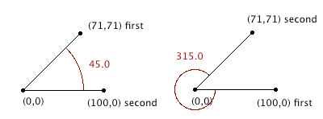

DWITE Online Computer Programming Contest
November 2009
Problem 1
Angles
Angles are a vital part of game physics, and are relevant to velocities, collisions, and other interactions between objects. As such, it's important to be able to accurately calculate angles between points.
The input file DATA1.txt will contain 5 lines, each containing two points. x1 y1 x2 y2. All values are integer values -100 <= n <= 100. The angle should be calculated between the first point, the origin at (0,0), and the second point, in a clockwise direction.
The output file OUT1.txt will contain 5 lines, each a corresponding angle between the points through the origin, rounded to the nearest 1/10th of a degree. If the angle is a whole degree, output the trailing .0

Sample Input (first 4 shown):
71 71 100 0 100 0 71 71 0 100 0 -100 -100 0 0 -100
Sample Output (first 4 shown):
45.0 315.0 180.0 270.0